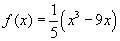

This device cannot display Java animations. The above is a substitute static image
Critical points
The left graph shows the curve of a cubic:

Where is this function increasing? We say that a function is
increasing on a closed interval if for all pairs of points
a and
b in the interval,
a >
b implies
f (
a) >
f (
b). In other words, as you move along the graph from left to right, you go "up hill."
Decreasing is defined in a similar manner. You can also figure this out from the derivative (shown in the center graph), since when the function is increasing, the derivative is positive and when the function is decreasing, the derivative is negative. Move the slider and watch the slope of the tangent line on the graph at the right. When the slope is positive, the function is increasing and the derivative is positive. When the slope is negative, the function is decreasing and the derivative is negative. The function shown is increasing on the interval (-∞,-3] and on [3,∞), which can also be written as -∞ <
x ≤ -3 and3 ≥
x ∞. It is decreasing on the interval [-3,3].
What happens at those points on the curve where the derivative is zero? A point in the domain of a function is called a critical point if the first derivative is zero or is undefined. On this graph, there are two critical points at x = -3 and x = 3.
Exrema, maxima and minima
Critical points are candidates for local (also called relative) extrema. A function f (x) has a local minimum at x = c if f (c) is less than or equal to the value of f for points near c. A local maximum is defined in a similar manner. Note that x = -3 is the location of a local maximum and x = 3 is a local minimum. You can also determine these using the first derivative test by finding the critical points for the function (i.e., where the first derivative is zero or undefined), then looking to see if the derivative changes sign. Note that at x = -3, the first derivative is zero and it changes sign from being negative on the left to being positive on the right. This means that x = -3 is the location of a local maximum. At x = 3, the derivative is also zero, but here the derivative changes from negative on the left to positive on the right, so x = 3 is the location of a local maximum.
Note that a point that is either a maximum or minimum is called an extremum, and the plurals of these are
maxima, minima, and extrema.
Concavity
Concavity describes the way that a curve bends. A function f is concave up on an open interval if f ' is increasing and concave down if f ' is decreasing. This also means that it is concave up if the second derivative f '' is positive and is concave down if the second derivative is negative.
Inflection point
An inflection point is where the function has a tangent and the concavity changes. In the example shown, the function is concave down on the interval (-∞,0) and concave up on (0,∞). There is an inflection point at the origin. in this case. Notice that you can see this behavior by looking at the graph of the second derivative (on the right-hand graph). When the function is concave up, the second derivative is positive, when the function is concave down the second derivative is negative, and where the second derivative is zero there is an inflection point.
Using the third derivative
The second derivative can also be useful in determining whether a critical point is a maximum or a minimum. At x = -3, the second derivative is negative, meaning that the function is concave down, so this is a local maximum (i.e., the top of a concave down hump). At x = 3, the second derivative is positive, meaning that the function is concave up, so this is a local minimum (i.e., the bottom of a concave up valley).
Other 'Applications of Differentiation' topics
(C) 2011 Copyright Math Open Reference.
All rights reserved